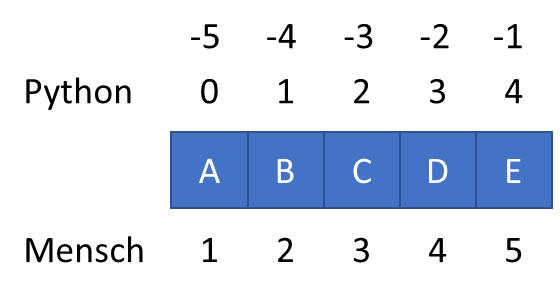

Überblick › LB 2/3 Programmieren und Algorithmen
2.1.4 Array – eine Datenstruktur
Was ist eine Datenstruktur?
In der Programmierung ist eine Datenstruktur eine Möglichkeit, Daten zu organisieren und zu speichern. Datenstrukturen ermöglichen den effizienten Zugriff auf Daten, ihre Speicherung und ihre Verarbeitung. Stell dir vor, du müsstest die Noten aller 25 Schülerinnen und Schüler eines Kurses in 25 einzelnen Variablen speichern – mit einer Liste genügt ein einziger Name.
Array
Ein klassisches Array hat eine feste Länge und enthält nur Werte eines Datentyps. In Python nutzt man stattdessen fast immer Listen: Sie können Werte verschiedener Datentypen speichern und wachsen bei Bedarf dynamisch. Wegen dieser Vorteile verwenden wir die Liste als Array, auch wenn das historisch nicht ganz korrekt ist.

Erstellen eines Arrays in Python
In Python werden Arrays bzw. Listen so erstellt:
mein_array0 = [] # erzeugt ein leeres Array ohne Werte
mein_array1 = [1, 2, 3, 4, 5]
print(mein_array1[3]) # gibt den Wert 4 aus
print(mein_array1) # gibt [1, 2, 3, 4, 5] aus
print(len(mein_array1)) # gibt die Anzahl der Elemente zurück, hier 5
print(mein_array1[-1]) # negativer Index: letztes Element, hier 5Arbeiten mit Arrays in Python
Um den Inhalt eines Arrays auszugeben, gibt es verschiedene Schleifen:
1. for-Schleife
mein_array = [1, 2, 3, 4, 5]
for element in mein_array:
print(element)2. while-Schleife
mein_array = [1, 2, 3, 4, 5]
i = 0
while i < len(mein_array):
print(mein_array[i])
i = i + 1Listenmethoden
In Python gibt es viele nützliche Methoden, mit denen sich Listen verändern, erweitern, durchsuchen oder verarbeiten lassen. Die jeweilige Methode wird mit dem Punktoperator aufgerufen.
Hier stand eine Abbildung, deren Nutzungsrechte für die Webseite nicht geklärt sind.
Beispiel:
meine_werte = [77, 3, 15, 37]
meine_werte.append(51) # fügt 51 am Ende an: [77, 3, 15, 37, 51]
meine_werte.insert(1, 18) # fügt 18 beim Index 1 ein, alles danach rutscht nach hinten:
# [77, 18, 3, 15, 37, 51]
meine_werte.remove(15) # entfernt den ersten Eintrag mit dem Wert 15
letzter = meine_werte.pop() # entfernt das letzte Element und gibt es zurück (51)Praxisbezug: Listen überall
Alltag: Deine Playlist, der Einkaufszettel in einer App oder der Verlauf im Browser sind Listen: Elemente werden angehängt (append), eingefügt (insert) oder gelöscht (remove).
Beruf: Data Analysts werten Messreihen aus, etwa Stromverbrauchswerte eines Energieversorgers. Sie arbeiten dabei mit Arrays aus Bibliotheken wie NumPy, die echte Arrays mit fester Länge und einheitlichem Datentyp sind – genau deshalb sind sie für Millionen von Werten viel schneller als Python-Listen.
Datei – Daten dauerhaft speichern
Eine Liste existiert nur, solange das Programm läuft. Sollen Messwerte, Punkte oder Adressen erhalten bleiben, speichert man sie in einer Datei. Ein sehr verbreitetes Format für Tabellen ist CSV: Tabellenkalkulationen wie Excel oder LibreOffice Calc können CSV-Dateien öffnen und speichern.
Einstieg: Notebook „Die Auswertung der Klausur“ (Textdateien lesen und schreiben)
Bevor es um CSV-Dateien geht, lernst du in diesem Notebook in drei Schritten, wie Python eine einfache Textdatei liest und schreibt (Vorhersagen – Ausführen – Untersuchen – Verändern). Am Ende schreibst du selbst ein Programm, das den Durchschnitt einer Klausur aus der Datei punkte.txt berechnet und in einer Datei speichert:
2-1-4_b_klausurauswertung_textdateien.ipynb herunterladen.
Die Datei punkte.txt musst du nicht herunterladen: Die erste Zelle des Notebooks legt sie an. Öffne das Notebook wie oben beschrieben im JupyterLite der Schule und lade es am Ende wieder herunter.
# Schreiben: Modus "w" legt die Datei neu an (ein vorhandener Inhalt wird überschrieben)
with open("temperaturen.csv", "w", encoding="utf-8") as datei:
datei.write("tag;temperatur\n") # Kopfzeile, \n beendet die Zeile
datei.write("Mo;12.5\n")
datei.write("Di;15.0\n")
# Lesen: Modus "r"
werte = []
with open("temperaturen.csv", "r", encoding="utf-8") as datei:
datei.readline() # Kopfzeile lesen und verwerfen
for zeile in datei: # jede weitere Zeile, z. B. "Mo;12.5\n"
teile = zeile.strip().split(";") # strip entfernt \n, split zerlegt: ["Mo", "12.5"]
werte.append(float(teile[1]))
print(werte) # [12.5, 15.0]with open(…) as datei: öffnet die Datei und schließt sie am Ende des eingerückten Blocks automatisch – auch wenn ein Fehler auftritt. Mit dem Modus "a" (append) werden Zeilen am Ende angehängt, statt die Datei zu überschreiben. encoding="utf-8" sorgt dafür, dass Umlaute richtig gespeichert werden. Existiert eine Datei beim Lesen nicht, bricht Python mit FileNotFoundError ab.
Das Wichtigste
Array (Feld): speichert mehrere Werte unter einem gemeinsamen Namen. Über den Index greift man direkt auf ein Element zu.
Index: Die Zählung beginnt bei 0. Das erste Element hat den Index 0, das letzte den Index len(liste) - 1.
CSV-Datei: Textdatei, in der jede Zeile einen Datensatz enthält. Die Felder sind durch ein Trennzeichen getrennt, in Deutschland meist durch ein Semikolon; die erste Zeile enthält oft die Spaltennamen.
Lesen aus Dateien: Eine Datei speichert Daten dauerhaft. Beim Lesen ist jede Zeile Text (str); Zahlen müssen mit int() oder float() umgewandelt werden.
Grundaufgaben
Aufgabe 2.1.4.1: Arrays durchlaufen AFB I
- Erstelle ein Array, das die Namen von fünf verschiedenen Tieren enthält. Gib die Namen der Tiere mit einer for-Schleife aus.
- Erstelle ein Array, das die Preise von fünf Dönerläden in Dresden enthält. Finde den günstigsten Preis und gib ihn aus.
- Erstelle ein Array, das die Temperaturen an fünf aufeinanderfolgenden Tagen speichert. Berechne den Durchschnitt und gib ihn aus.
Aufgabe 2.1.4.2: Passwortgenerator AFB II
Importiere das Modul random (import random). Erstelle anschließend ein Array mit fünf Adjektiven und ein zweites Array mit fünf Nomen. Erzeuge nun drei Zufallszahlen. Die ersten beiden Zufallszahlen sollen mit random.randint(0, 4) über den Index ein Adjektiv bzw. ein Nomen aus den beiden Arrays auswählen. Die dritte Zufallszahl liegt zwischen 1 und 100. Gib das erstellte zufällige Passwort als Kombination aus Adjektiv, Nomen und Zahl aus.
Das kann ich jetzt
Grau steht, was der Lehrplan verlangt, darunter, was das für dieses Thema konkret heißt. Hake einen Punkt ab, wenn er in deinem Hefter zusammengefasst ist und du ihn ohne Hilfe kannst. Wie du ihn zusammenfasst, entscheidest du selbst. Die Haken speichert nur dein Browser.
Lehrplan LB 2 Feld (Kennen von strukturierten und dynamischen Datentypen)